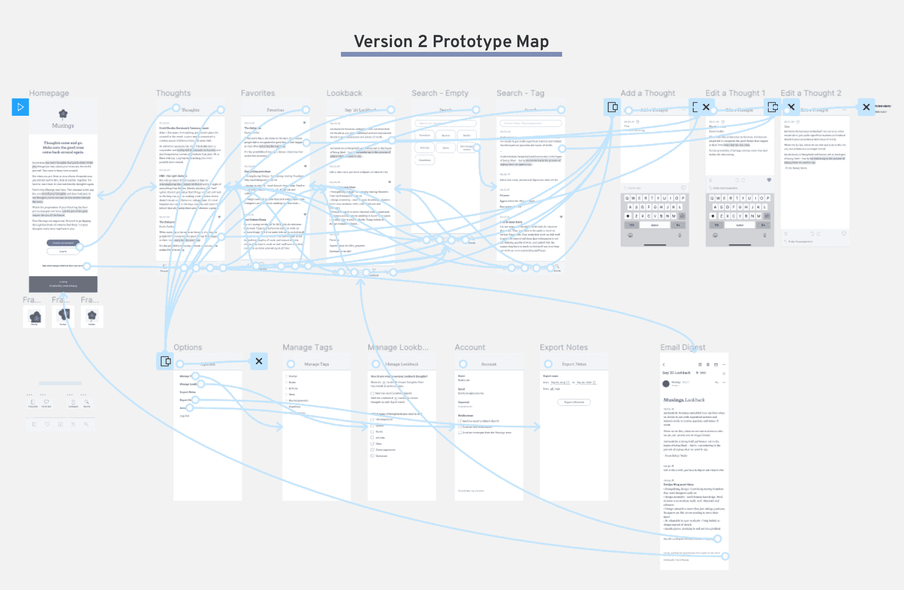

Musings

Problem
Sometimes when I’m in a particularly reflective mood, I have musings that particularly strike me. I usually jot them down in my phone’s Notes app, but they’re mingled there with other things like my grocery list or to do’s. I wanted to keep these special thoughts around and reflect on from time to time, but when they were buried in my phone they got lost among the noise.
I wanted an app I could use that wasn’t for daily to-do reminders, not for accomplishing things. I wanted a simple journal of short musings and memories that wouldn’t slip away. Like Facebook’s On This Day feature that brings old posts to the forefront, I wanted an app that could bring old thoughts back to me every so often.
I searched and searched and couldn’t find that app. So I decided to make it myself.
Market Landscape
I found five categories of products people generally use to record their thoughts.
- Notes apps (such as
Notes,
Google Keep,
EverNote,
OneNote)
These apps are geared toward keeping and organizing random notes. They’re the most similar to what I was creating, though these apps didn’t make it easy to look back on past notes. - Reminder apps (such as
ToDoist,
BZ Reminder,
Microsoft To-Do,
Calendar Notify)
These apps served more like to-do lists for task-based thoughts, which were not the types of thoughts I wanted to target. I wanted to target ponderings that weren’t necessarily actionable right away, but rather more interesting food-for-thought. - Journaling apps (such as
Daygram,
Day One Journal,
Momento,
Daylio)
These journaling apps incorporated all different types of media (like photos and videos) or metrics to track (such as mood or activity). They also often organized their structure around getting the user to write an entry every day. My idea is to get much simpler, focusing only on notes without any pressure to write at specific intervals. - Word processing apps (such as
Google Docs,
Word,
LibreOffice Writer,
Pages)
These apps are used for more focused writing, and were much longer and more formal than of the types of notes I was hoping to capture. - Good ol’ fashioned pen and paper
Sticky notes around the house and long-form journals are a convenient, low-tech way to record thoughts. I myself enjoy the ritual of writing things by hand, and would hope this app could hopefully supplement rather than completely replace them.

Seeing the other options in the marketplace, I aimed to position my app to differentiate by emphasizing:
- A focus on thoughts, reflections and musings.
Other apps try to be everything to everyone, creating clunky interfaces with features people don’t use. I want this app to focus on the more abstract thoughts people have, rather than task-based to-do’s. - Easy and convenient ways ways to look back old entries, without having to make the effort to search for them
yourself.
Even though all these other apps store notes, most of them keep them filed away and it takes great effort to find old notes again. I wanted to keep the looking back portion of this app front and center. - Simplicity and calmness.
I wanted to make the app a more reflective experience, rather than one focused on productivity. Instead of having a million options at your fingertips, I wanted the UI and experience to feel light and easy and clean.
User Research
I did some informal user research among a dozen of my friends through a very formal and sophisticated communication medium: text message.
I asked them if and how they store any thoughts or musings that come to mind. A few of them didn’t do anything formal, but most told me they wrote things down in various phone apps or emailed notes to themselves.
For the people who said they did take note of their thoughts, told them about my Notes + “On This Day” idea. I was surprised but please to see quite positive initial reactions.
Me:
“Do you ever like, take notes on your phone or in a notebook or something when you have a
thought/musing?”
Various friends:
“Yeah, all the time! Mostly use Google keep for phone thoughts and then journal for
handwriting”
“Lol yes. I have a folder titled brain dump in my drive”
“Yes! Notes on phone but I often forget to follow up lol”
Me:
“Okay so. I have this app idea and I’m wondering what people think. Basically it’s like, a cross
between the notes app and the “on this day” Facebook feature. How it would work would be like, you
write thoughts down in this app, and they’d be there as a list. But also, on some day in the future,
whether on the same day in a year or some other time, it would remind you either by email or
notification. Thoughts??”
Various friends:
“OOOH I LOVE. Yes. I love it.”
“I would love and use that!!”
“I need this app. I have so many dang notes that sometimes I spend my weekend going through them
for refreshers, but I love the idea of automating that.”
I then probed a bit into their current habits and compiled a list of initial observations.
Initial User Insights
- People do take notes on their phone about thoughts and musings.
Many women do tend to have thoughts they write down in their phone, ranging from to-do list items to observations about the world and themselves. - People take notes on their phone because it’s always there.
Since a phone is always handy nowadays, it is easy to reach for at a moment’s notice. - Notes take a variety of lengths and forms.
Some notes like single quotes were just one sentence, while other notes like meeting notes could span multiple viewport screens with bullet points and advanced formatting. - People have a desire to come back to their notes, but rarely do it in practice.
People expressed a desire to look back on their notes regularly but found it difficult to do amidst their busy lives. Since the only way to review the notes would be self-initiated, people often didn't have or make the time to review notes that were stored away in various places on their phone.
With all this in mind, I framed my learnings into an actionable product direction by framing a couple Jobs to be Done that captured the essence of the need across all users.

Version 1
Product Pillars
Going into the first version of this idea, I outlined the following pillars as the fundamental components of the app.

Sketching
I also started jotting down different phrases to “sell” the app, less for actual usage and more for helping me think more intentionally about the core of my idea and hone in on the problems I was really trying to solve for.

My main app features included:
- Creating an account
- Writing and editing entries
- Seeing the full list of all entries, with long previews
- Getting email reminders with full entry excerpts
- Tagging entries
- Searching through entries by keyword or tag
- All of it in a clean, simple, minimal interface
Mockups
I took these sketches and choose the minimum number of screens it would take to convey my idea to people.
A large part of my app’s value proposition was to provide more simplicity and calm with my design, so it was important for me to test high-fidelity versions right away (as opposed to creating mockups with a more in-between fidelity like wireframes).

User Testing
I conducted 30-minute feedback sessions with a few friends to further refine my idea.
I began by asking them broad questions that probed into their note-taking habits (“Walk me through your current system for jotting down thoughts”). I then got into how they look back on notes, what keeps them from looking back more often, and what they do after they do look back. Finally, I showed them my six app screens, offering them as probes to elicit more specific feedback.
Version 1 Feedback: User Insights
- Writing notes is often done in a hurry.
"Either i'm about to meet someone, or I'm rushed, I only have a minute to write it down" - People liked the idea of seeing past entries in theory, but in practice they may not take
the time.
“I do intend to go back to the notes or read them, but I never do. I don’t make time for it I guess” - People don’t tend to read emails that aren’t urgent to-dos.
“I’m used to ignoring things that don't need a response” - People often find themselves editing the same note over and over again, adding onto it to
keep the content top-of-mind.
“Sometimes I’ll make a random edit so the note goes to top of list so I can see again." - People keep their notes in their preferred app forever, not moving things to a separate
place for
long-term storage.
“Oh, put them somewhere else long-term? That’s new to me.”
Version 2
Refinements from v1
Based off the user feedback from sharing version 1, I adjusted my initial designs. Of the many tweaks I made, a few of my key changes are outlined below.
- Switching my perspective on reminders.
When I showed editing an app with a reminder date, people got hung up on deciding when they think they’d want to see it again. This distracted from the main idea of reflecting on the past, not planning the future. I switched the lens on my reminder feature, emphasizing the “look back” component. - Creating a “Lookback” view in the app.
While I may obsessively read my emails, I realized pretty much nobody else did the same. I realized I needed a way for people to look back from within the app, so I created a whole “Lookback” view. - Setting the Lookback cadence to monthly.
People are often rushed for time, and reading past notes seemed to be more of a relaxation or reflection activity rather than a productive one. I decided on a monthly cadence since it seemed like long enough for people to not get completely sick of reminders, but also short enough that the lookbacks would stay engaging and interesting. - Limiting amount of Lookbacks in a given month.
People have hundreds of notes through the years. Seeing potentially dozens and dozens of notes at a time would be a huge turnoff to ever returning. I set an adjustable limit to make sure people both know there is a limit, and can adjust the limit as they see fit. - Adding favorites.
People tended to go back to the same note over and over again, to add on as well as to review. I realized I needed a way to keep certain notes at-the-ready. I chose Favorites over a pinning system because the idea of favoriting something added an emotional attachment I felt was in-line with the app goals. - Adding note highlights.
People wanted a way to pull out the most interesting or impactful part of their notes, especially for the ones that got long. They wanted to make sure these sections were the ones that appeared on preview, as opposed to always showing the beginning of the note. I played with multiple formatting options but ultimately landed on highlights, to maintain the clean, minimal look that characterizes the app.
Product Pillars
Based off the refinements I needed to make based off of my v1 findings, I updated my product pillars to include my new learnings.

Clickable Prototype
Armed with a greater degree of confidence around the core feature set of what people would want from this app, I mocked up more parts of the app screens and turned it into a clickable prototype in Figma.
Try out the full clickable prototype below, or by clicking here.
User Testing
This is where I'm currently at. Stay tuned for updates!